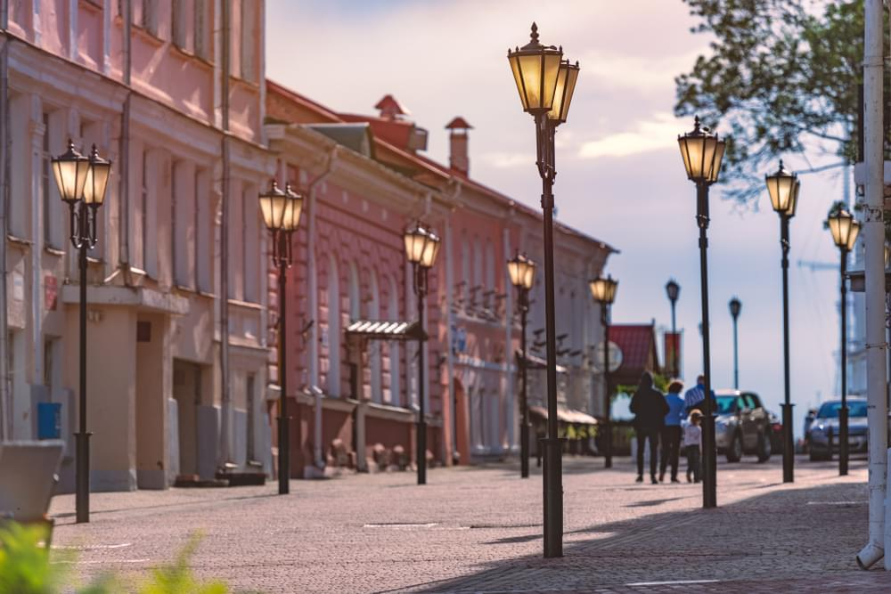
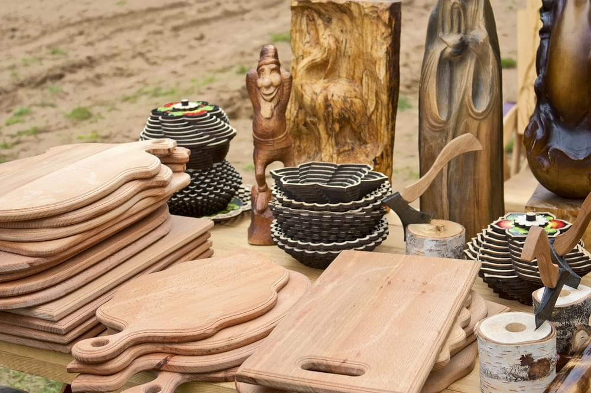

Достопримечательности
Старый город Витебска — место, которое первым делом посещают туристы. Здесь вы увидите главные
достопримечательности Витебска. Одна из них — пешеходная улица Суворова, одна из самых старинных в городе. Ее
длина — 1,3 км. На улице, вымощенной брусчаткой, расположены памятники архитектуры 18-19 веков: церкви, бывшие
доходные дома, особняки. В исторических зданиях сегодня открыты кафе, рестораны, сувенирные лавки.

Сувениры
В Витебске можно купить качественную обувь, сумки и аксессуары из кожи. Если ищете себе обновки, стоит заглянуть
в магазины местных марок «Марко» и «Белвест».
Беларусь славится льном, его еще называют «северный шелк». В Витебской области находится Оршанский льнокомбинат
— самый крупный в стране и в Европе. Отличным подарком станут вещи из льна: например, одежда, сумки, постельное
белье, скатерти и полотенца.
В Беларуси отличное качество трикотажа: майки, носки, колготки и нижнее белье приятны к телу и долго носятся.
Хотите купить что-то в подарок? Ищите в Витебске торговые точки Брестского чулочного комбината, где в консервных
банках продаются «беларускiя шкарпэткi» — носки с национальной вышивкой.
Изделия из соломы — часть национальной культуры Беларуси. Привезите домой интересную вещицу из соломы:
куклу-оберег, шкатулку, шляпу, картину или что-то другое.
На память о поездке в Витебск также можно купить местные вафли «Витьба» и конфеты «Беловежская пуща», травяные
чаи, магниты, книги и газеты на белорусском языке, статуэтки и посуду из дерева.

Кухня
В Витебске много кафе, ресторанов и закусочных. Почти в каждом заведении вы найдете национальные блюда из
картошки, свинины, капусты, свеклы.
Попробуйте шурпу мотольскую родом из Витебской области. Это густой суп из мяса, в котором даже ложка стоит.
Шурпу готовят из сердца, почек, легкого и печени, которые поэтапно варят, а потом к ним добавляют пассерованные
овощи.
Еще здесь готовят гульбишники, или бульбишники — запеканку из творога и картофеля. Картофельное пюре
перемешивают с мукой, яйцами, творогом, сметаной, укропом, луком и запекают в духовке.
Зайдите в магазины «Витебские продукты» или «Веста», чтобы купить местные продукты — например, знаменитую
сгущенку Глубокского молочноконсервного комбината, который находится в Витебской области.
В Витебске можно попробовать традиционные белорусские алкогольные напитки: зубровку, крамбамбулю, крупник,
разные виды бальзамов и квас.